Like most wedding mornings, not that either of us have been married more then once, it was a little hectic. In our little 600 sq. ft. apartment we got ready, along side family. We definitely didn't follow the tradition of 'don't see the bride/groom before the wedding' but it hasn't hurt us so far.
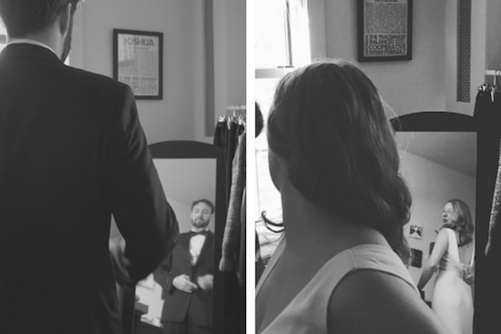It is a very interesting experience getting married in a courthouse,
the contrast of the outfits of those around you as you head through security is something else.. especially when the security guard asks you
to put your bouquet through the security belt.
The morning ceremony was a small one, less than 14 people (including us), in the Courthouse "chapel."
But there was a lot of love in the room, we chatted and cracked jokes before the ceremony began. Our Officiant arrived, welcomed everyone and made sure to
learn the relationship between all who attended. It was truly touching, and made the ceremony much more personalized.
As we began, both of us had to laugh to stop from crying and Megan attempted blowing into her own eyes to prevent
the mascara from running. The biggest criers in the room, definitely the mothers. Following the ceremony, we had a moment with each guest as they approached and signed our "guest book"
provided by the Courthouse. We were even told to keep our excitement down, and reminded that it was a "working building," truly unqiue words of advice
from Courthouse staff to those celebrating.
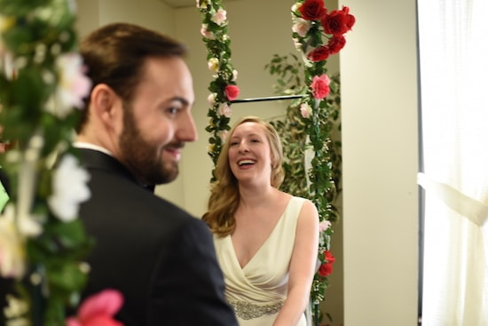
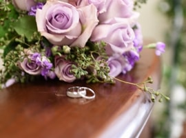 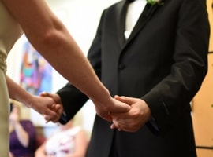
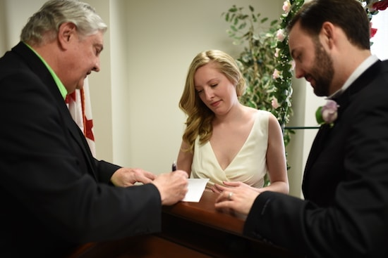
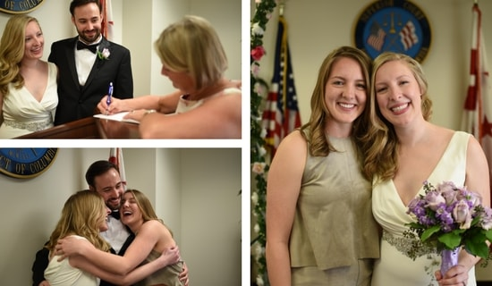
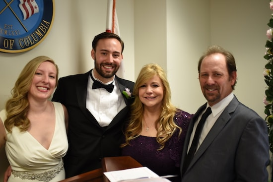
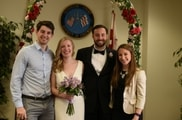
 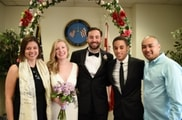
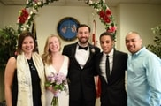 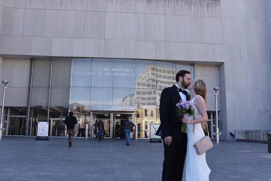
Later that evening, we were joined by more close friends at Bistro Cacao to party the night away.
With a menu fit for kings -- lamb, steak, salmon, and ravioli -- and more wine then we could drink (literally)
we were able to have special time with friends as close as a couple blocks away in Washington D.C. and friends and family from Scotland, California, Texas, Ontario, and Minnestoa.
Towards the end of the evening, Megan's sister, Alie and close friend, Rachelle, led the group in the "Shoe Game" where Joshua and Megan were
asked a series of questions like "who snores when they sleep" and had to respond without knowing each other's answers. If you haven't seen, some of those answers
are shared on this page.
Thank you to all the wonderful friends and family who joined us to make it such a beautiful and memorable day! We are so lucky
to be surrounded by such incredible individuals who are willing to travel for us, and fill the room with love.
-- Joshua & Megan
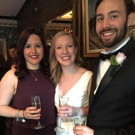 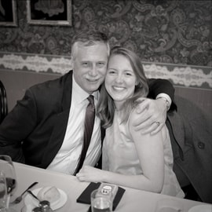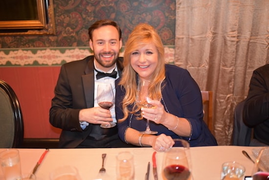
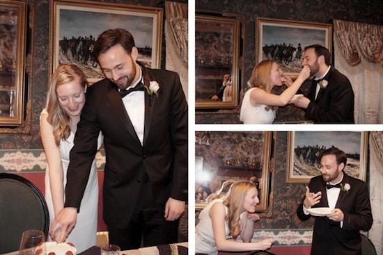